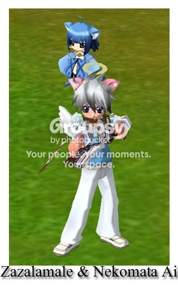

ชื่อ-นามสกุล : Zazalamale (ซาซาลาเมล)
ระดับ : 99
เผ่าพันธุ์ : มนุษย์ครึ่งเทพ
อายุ : ด้วยเผ่าพันธุ์ของมนุษย์ครึ่งทำให้เขามีอายุไขมากกว่ามนุษย์ปกติเล็กน้อย ปัจจุบัน 18 ปี
เพศ : ชาย
อาชีพ : Holy Gunner
รูปร่าง-หน้าตา :

นิสัย-บุคลิก : นิสัยเป็นคนเงียบๆ ไม่ค่อยคุยกับใคร แต่มักจะคุยกับแมวของตัวเอง
ประวัติ : Zazalamale เป็นลูกครึ่งที่เกิดจากแม่ซึ่งเป็นมนุษย์ กับ พ่อที่เป็นเทพ ทั้งสองพบรักกันที่โลกของมนุษย์ในระหว่างที่พ่อของ Zazalamale กำลังปฏิบัติภาระกิจสวรรค์อยู่เมื่อภาระกิจสวรรค์สิ้นสุดลงพ่อของ Zazalamale ก็จำเป็นต้องพลัดพรากจากนางอันเป็นที่รักโดยไม่รู้ว่า อีกนานเท่าไรจะได้พบกันอีกก่อนที่พ่อของ Zazalamale จะกลับไปได้ทิ้งของสิ่งหนึ่งไว้ให้แม่ของ Zazalamale มันคือผ้าพันคอพิเศษที่ลงตราเวทย์เอาไว้ และเขาก็จากไปโดยที่ไม่รู้ด้วยซ้ำว่าเขากำลังจะได้เป็นพ่อแล้ว
ไม่นานนัก Zazalamale ก็ได้ถือกำเนิดขึ้นซึ่งตรงกับวันที่ 14 Feb ซึ่งตรงกับวันวาเลนไทน์พอดี Zazalamale อาศัยอยู่กับแม่ในเมืองเล็กๆแห่งหนึ่ง
Zazalamale แตกต่างจากเด็กทั่วไปในวัยเดียวกันคือเขามีปีกสีขาว สองข้างอยู่ที่กลางหลัง ด้วยเหตุนี้ทำให้เขาไม่ค่อยมีเพื่อนเหตุนี้จึงทำให้เขาเป็นคนเงียบๆ จนกระทั่ง เมื่อเขาอายุ 8 ปี ได้เกิดสงครามขึ้นระหว่าง มนุษย์ และ Dem ทำให้เกิดการสูญเสียมากมายรวมถึงแม่ของเขาด้วย ก่อนที่แม่จะตายแม่ได้มอบผ้าพันคอผืนหนึ่งที่พ่อเคยให้ไว้ แก่ Zazalamale เมื่อแม่ตาย Zazalamale ก็ต้องต่อสู้ดิ้นรน หลบหนี เพื่อเอาตัวรอด จากภาวะสงครามเพียงลำพัง
เมื่อสงครามยุติลง Zazalamale ได้พบกับ เศรษฐีคนหนึ่งมีนามว่า Ricko Ricko ไม่มีลูกและภรรยาเขารู้สึกถูกชะตากับ Zazalamale มาก จึงได้รับ Zazalamale ไว้เลี้ยงดูเป็นลูกบุญธรรม
Ricko ได้สอนวิชาการต่อสู้แก่ Zazalamale โดยวิชาที่ Zazalamale ถนัด และสนใจเป็นพิเศษคือ วิชายิงปืน นอกจากนี้ Ricko ยังจ้างคุณครูพิเศษมาสอนเวทย์มนตร์แก่ Zazalamale ด้วย โดยวิชาเวทย์มนตร์ที่ Zazalamale เรียนคือ วิชาเวทย์รักษา
เมื่อ Zazalamale อายุได้ 15 ปี Zazalamale ได้ข่าวว่า มีเทพบางส่วนได้มาประจำการอยู่ที่โลกมนุษย์ Zazalamale จึงบอกลา Ricko เพื่อออกเดินทางตามหาพ่อ ก่อนจากกัน Ricko ได้มอบผ้าสีน้ำเงินผืนหนึ่ง แก่ Zazalamale ไว้ โดยบอกว่ามันเป็นของที่สืบทอดกัผม
ระหว่างออกเดินทาง Zazalamale บังเอิญได้พบกับ Dem ที่มาสอดแนมหาข่าวจากโลกมนุษย์ และได้เกิดการต่อสู้กันขึ้น นี่ถือเป็นครั้งแรก ที่ Zazalamale ได้ใช้วิชาที่ร่ำเรียนมาจาก Ricko เขาต่อสู้กับ Dem อย่างไม่คิดชีวิต ทว่า ประสบการณ์นั้นยังด้อย เขาพลาดท่าเสียที ถูก Dem ยิงเข้าที่กลางหน้าอกก่อนจะหลบหนีไป Zazalamale พยายามจะพยุงร่างที่บาดเจ็บเอาไว้แต่ก็ไม่เป็นผล เขาล้มตัวลงกับพื้นด้วยความเจ็บปวดเลือดจากกายของเขา ไหลนองไปทั่วผืนปฐพีและเขาก็ค่อยๆหลับตาลง ในขณะที่เขาหมดสตินั้น มีแสงออร่าสีนำเงิน เปล่งประกายห่อหุ้มร่างของเขาเอาไว้
"เจ้านาย!! เจ้านาย!!" มีเสียงๆหนึ่งดังก้องในหูของ Zazalamale
Zazalamale ค่อยๆลืมตาตื่นขึ้น เขาประหลาดใจมากกับสิ่งที่พบเห็นอยู่ตรงหน้า มันเป็นวิญญาณของ Nekomata สีน้ำเงิน
"ฟื้นแล้วหรอ ข้าน้อยมีชื่อว่า Ai จากนี้ต่อไปขอฝากตัวด้วยนะ"
..................................... ไปแต่งต่อเองนะ
ความสามารถพิเศษในการต่อสู้ : สามารถใช้ปืนได้อย่างคล่องแคล่ว
ความสามารถพิเศษอื่นๆ : มีพลังเวทย์รักษา
เจ้าของของnekomata... : Nekomata Ai
อื่นๆ : เนื่องจาก Zazalamale เป็นเทพครึ่งมนุษย์ ดังนั้น ในคืนเดือนมืดของทุกๆเดือน เมื่อตะวันลับขอบฟ้า Zazalamale จะสูญเสียพลังเทพและเป็นมนุษย์เต็มตัว และพลังจะกลับมาอีกครั้ง เมื่อดวงตะวันขึ้นในยามเช้าของวันรุ่งขึ้น